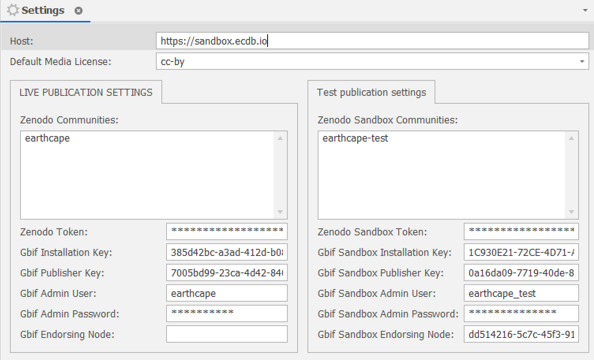
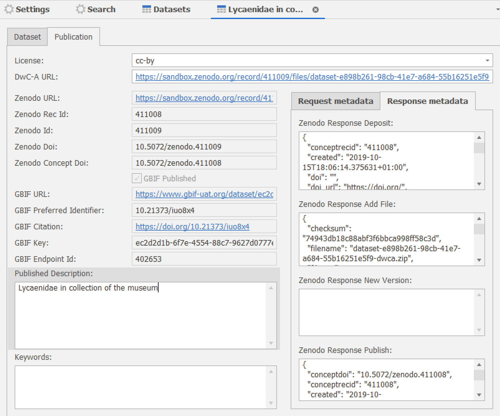
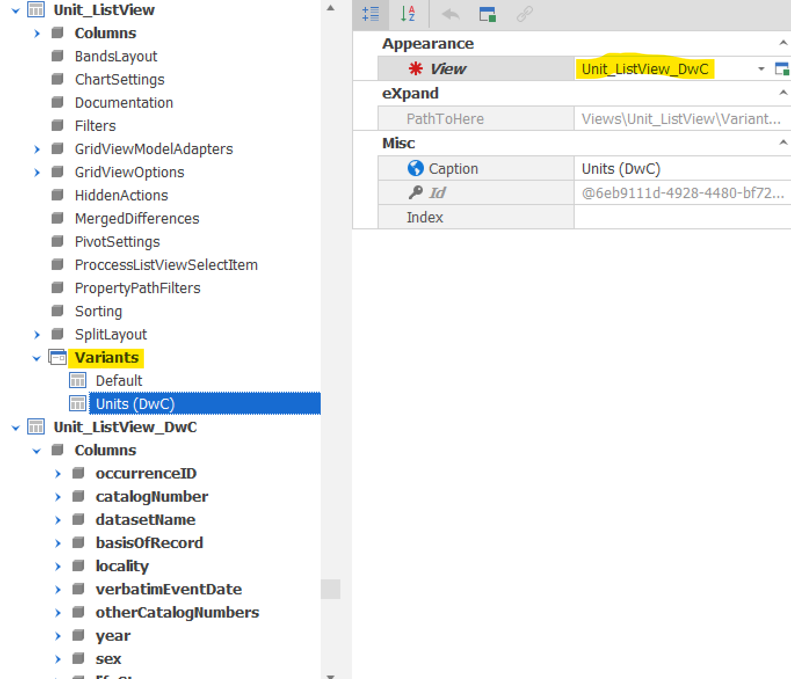
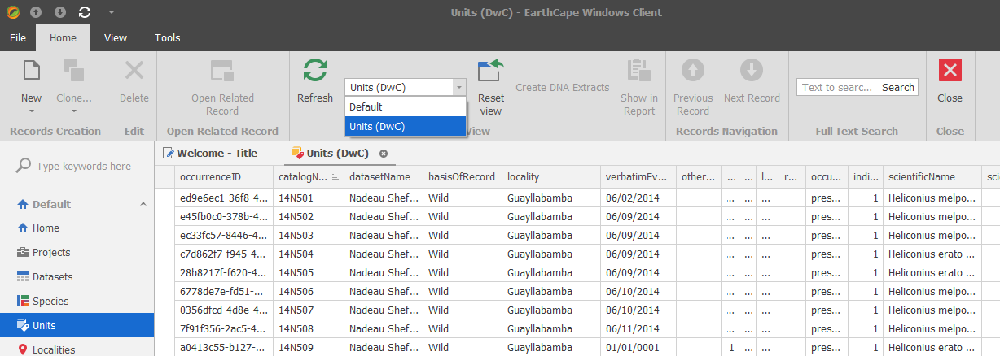
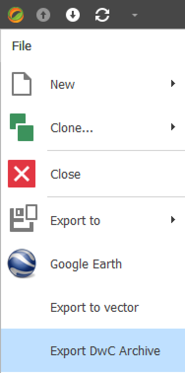
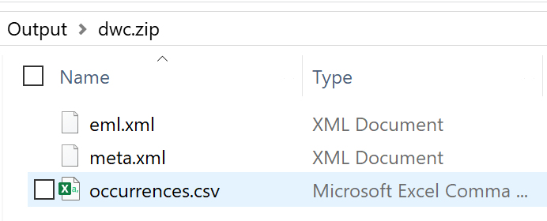
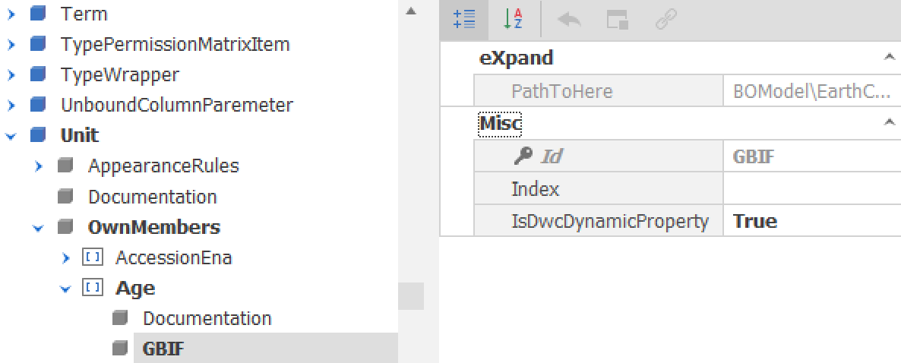

GBIF support
Currently EarthCape has following integrations implemented.
Publishing datasets directly to GBIF
Prerequisites (Settings):
- EarthCape Project is the entity that corresponds to GBIF Organization. Publisher key needs to be obtained after becoming a GBIF publisher. The key can also be set for each project individually.
- API user for EarthCape system. You need contact GBIF to request publishing permissions for a user on behalf of your organization.
- Set GBIF API (http://api.gbif.org/v1/ or http://api.gbif-uat.org/v1/ for testing)
- Create GBIF installation key directly from EarthCape settings page
- Specify endpoint where the DwC-A files are stored.
- Obtain Zenodo token

Pushing a dataset to GBIF:
After all settings are in there are 2 options:
- deposit a DwC archive file using "GBIF Store Dwc-A" command. Make sure it is accessible at the endpoint specified in Settings and publish to GBIF directly pointing to the DwC archive stored in your specified location.
- Publish to GBIF via Zenodo. DwC Archive is created and deposited to Zenodo a new record. GBIF dataset is created and its end point is set to the archive file stored on Zenodo. In case of and update, Zenodo new version record is created and GBIF end point is updated.
If executed successfully GBIF citation and identifier from GBIF are stored for the dataset.

Here is the process demonstrated in EarthCape Windows Client:
Here is the process demonstrated in EarthCape Web Client:
Taxonomic names checking
GBIF's Species Match service is used to match species names and download name status, valid taxon and higher categories. Read more.
Darwin Core Archive export
Application model list view variant is mapped to EarthCape fields. This mapping can be extended or adjusted by editing the model:

This adds a variant option in the tool bar that allows switching from EarthCape default view to Darwin Core formatted view:

Switching to this view also enables Darwin Core Archive export option in the menu:
 
Supported extensions
Configuring dynamicProperties
Unit object model GBIF node under OwnMembers. Setting IsDwcDynamicProperty=True for the desired model member will include it in the json output for dynamicProperties field.
